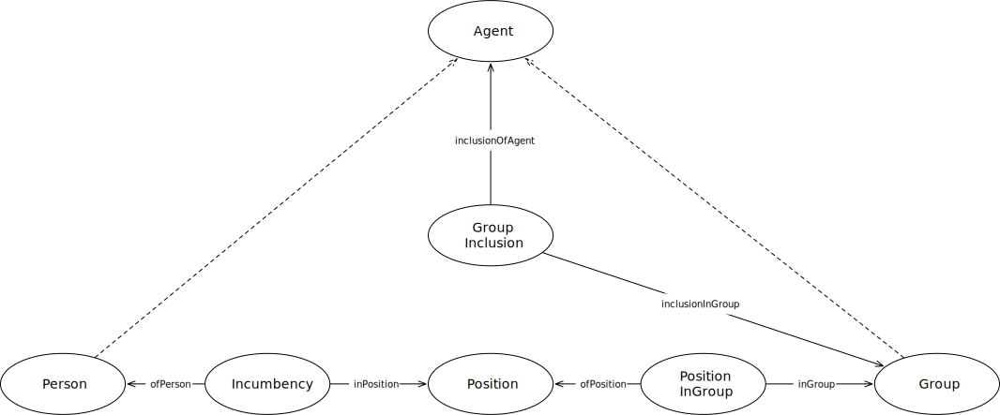

IRI: http://parliament.uk/ontologies/agency/Agent
IRI: http://parliament.uk/ontologies/agency/Group
IRI: http://parliament.uk/ontologies/agency/GroupInclusion
IRI: http://parliament.uk/ontologies/agency/Incumbency
IRI: http://parliament.uk/ontologies/agency/Person
IRI: http://parliament.uk/ontologies/agency/Position
IRI: http://parliament.uk/ontologies/agency/PositionInGroup
IRI: http://parliament.uk/ontologies/agency/inGroup
IRI: http://parliament.uk/ontologies/agency/inPosition
IRI: http://parliament.uk/ontologies/agency/inclusionInGroup
IRI: http://parliament.uk/ontologies/agency/inclusionOfAgent
IRI: http://parliament.uk/ontologies/agency/ofPerson
IRI: http://parliament.uk/ontologies/agency/ofPosition
IRI: http://parliament.uk/ontologies/agency/familyName
IRI: http://parliament.uk/ontologies/agency/givenName
IRI: http://parliament.uk/ontologies/agency/otherNames
This HTML document was obtained by processing the OWL ontology source code through LODE, Live OWL Documentation Environment, developed by Silvio Peroni.